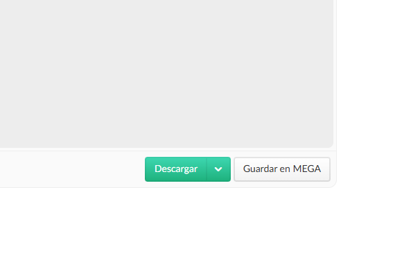
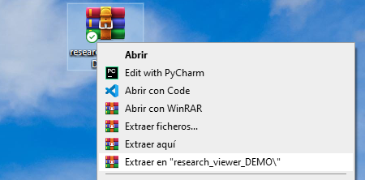
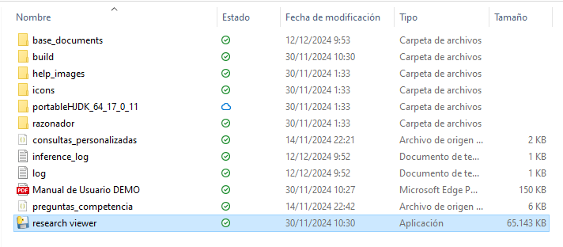

Research Visualizer como software
Research Visualizer es una aplicación diseñada para gestionar, explorar y visualizar proyectos de investigación
de manera interactiva y eficiente. Esta herramienta permite a los usuarios explorar los datos y metadatos
ingresados para un proyecto de investigacion, acceder a información detallada interrelacionada a distintas
investigaciones mediante consultas
predefinidas o personalizadas utilizando las ventajas que ofrecen la ontologia sobre la cual todo el sistema
esta montado.
La aplicación simplifica el manejo de datos complejos mediante una interfaz intuitiva y funcionalidades
avanzadas. Los usuarios pueden cargar un repositorio de investigaciones y para tal, visualizar la
informacion registrada, explorar tanto los datos como los metadatos de la misma, obtener las relaciones
entre las distintas clases de informacion y exportar reportes estructurados que facilitan el análisis y la
toma de decisiones.
Funciones principales
Research Visualizer ofrece una amplia gama de características para optimizar el trabajo con ontologías. Estas
incluyen:
- Carga de repositorio de investigaciones en formato RDF y validación de consistencia.
- Procesos de inferencia y deduccion de nueva informacion.
- Exploración interactiva de los distintos tipos de informacion registrados.
- Consultas personalizadas para extraer información específica.
- Generación de reportes en formato CSV.
Ejemplos prácticos
Con Research Visualizer, los usuarios pueden:
- Identificar investigadores relacionados con un proyecto de investigación.
- Explorar los objetivos, estrategias metodológicas y hallazgos principales de un proyecto.
- Analizar relaciones complejas entre entidades como técnicas y registros asociados.
Guía rápida para usar Research Visualizer
Noviembre 28, 2024 por Equipo de Desarrollo
Research Visualizer es una herramienta diseñada para explorar y analizar proyectos de investigación previamente
cargados en un archivo RDF siguiento el diseño de clases y relaciones desarrollado en nuestra ontologia. A
continuación, te presentamos una guía rápida para que puedas aprovechar al máximo la aplicación desde el
primer uso.
"Research Visualizer hace que la recuperacion y visualización de datos relacionados a una o varias
investigaciones sea intuitiva y eficiente para investigadores y gestores de proyectos."
Sigue estos pasos para comenzar:
Pasos iniciales
- Abrir la aplicación: Inicia Research Visualizer y haz clic en el botón destacado para
cargar una ontología.
- Cargar un repositorio de investigaciones:
- Selecciona el archivo RDF desde tu computadora que contiene el repositorio.
- La aplicación validará la ontología y mostrará un mensaje confirmando que está lista.
- Si la validacion es correcta, la aplicacion iniciara los procesos de inferencia sobre tu
repositorio, buscando generar toda la informacion que pueda deducirse y que no este ya declarada
explicitamente.
- Una vez que este proceso termine, la aplicacion mostrara distintas secciones para explorar las
investigaciones del repositorio.
- Ahora ya esta todo listo para que puedas explorar los distintos proyectos de
investigacion
Distintas formas de exploracion
Research Visualizer presenta dos formas diferentes para explorar el repositorio de investigacion: Una forma
global (donde puede obtenerse informacion de todas las investigaciones del repositorio) y
otra individual
(donde se permite centrar la vista en un unico proyecto de investigacion y solo ver informacion relacionada
al mismo)
Exploración Global del Repositorio
Debajo del título Consultas Globales de Investigación, verás un cuadro con botones
organizados por
grupos. Cada botón ejecuta una consulta predefinida sobre el repositorio completo. Estas consultas tienen
como fin recuperar información de todas las investigaciones registradas en este repositorio.
Ejecutar una consulta
- Haz clic en un botón para ver resultados relacionados con la consulta
- Ejemplo: "Obtener todos los proyectos con sus investigadores" listará todos los proyectos en el
repositorio y, para cada uno, mostrará también sus investigadores

Exploración Individual por Investigacion
Después de cargar la ontología, se habilitará la seccion Explorar Investigacion
Individual. Esta contiene una lista desplegable con todas las investigaciones que contiene el
repositorio.
Seleccionar una investigacion para explorar
- Haz clic en el combobox para que despliegue toda la lista de investigaciones disponbiles
- Luego de seleccionar una, haz clic en el botón "Explorar" a la derecha.
Información de la Investigación Elegida
Al visualizar un proyecto, aparecerán varias secciones:
- Título de la Investigación
- Nombre grande en la parte superior de la pantalla
- Participantes
- Lista de investigadores asociados al proyecto
- Ejemplo: "Participantes: Juan Pérez | Ana López".
- Consultas Predefinidas
- La parte central de la exploracion por investigacion esta compuesto por un conjunto consultas
predefinidas, agrupadas en funcion de la tematica.
- Estas consultas predefinidas facilitan el acceso a los datos más relevantes de esa investigación.
- Ejemplos:
- Objetivos del Proyecto: Muestra los objetivos propuestos y alcanzados
- Resultados: Resume los principales hallazgos y conclusiones del proyecto

- Navegación por Pestañas: Explorar Instancias por Clase
- En la parte inferior de la vista del proyecto, encontrarás una serie de pestañas que te permitirán
explorar todas las instancias relacionadas con el proyecto elegido, organizadas por clase. Estas
pestañas son útiles para profundizar en los datos y entender la estructura de la información.
- Cómo usar las pestañas:
- Haz clic en la pestaña correspondiente a la clase que deseas explorar.
- Dentro de cada pestaña, se mostrará una lista de las instancias relacionadas con esa clase,
agrupadas y ordenadas alfabéticamente.
- Cada instancia es clickeable, y al hacer clic, aparecerá una ventana flotante con información
detallada, como sus atributos y relaciones.
- Cada sección tiene un botón "Exportar" que genera un archivo csv con la información mostrada.

Funciones avanzadas
Además de explorar proyectos, Research Visualizer permite personalizar la experiencia para usuarios expertos
con las siguientes
funciones:
| Función |
Descripción |
| Personalizar carga |
Las opciones avanzadas en la pantalla de inicio permiten personalizar el proceso
de validacion e inferencia, pudiendo elegir opciones como no validar, configurar que generador de
inferencia se aplique, manipular el archivo original o una copia, cargar sin validacion o inferencia,
etc. |
| Consultas personalizadas |
Definir y ejecutar consultas SPARQL propias para obtener información del repositorio de
investigaciones. |
| Ver registro de inferencias |
La aplicacion tiene una seccion donde se muestra en lenguaje natural que informacion el razonador
agrego al repositorio durante la etapa de inferencia. |
| Edicion del repositorio |
Agregar instancias y nuevas relaciones entre instancias al repositorio, la cuales quedaran
registradas en el archivo RDF. |
| Generación de repositorio nuevo |
La opcion de carga con Excel permite generar un repositorio nuevo a partir de un Excel estructurado
con informacion de una o varias investigaciones. |
Version DEMO: Para probar la aplicacion sin complicaciones
Noviembre 30, 2024 por Equipo de Desarrollo
Si bien Research Visualizer es una herramienta sencilla que no posee una curva de aprendisaje pronunciada al
momento
de enfrentarse con ella, la version DEMO tiene algunas simplificaciones en cuanto al flujo
de carga del repositorio de investigaciones que abstraen a los usuarios interesados mas en conocer la
aplicacion y sus capacidades que en explorar un repositorio particular de investigaciones.
Con esto en mente, dejamos un pequeño instructivo de uso de esta version DEMO asi como el link de descarga
al final del post.
Con el fin de simplificar a los nuevos usuarios la prueba de este software, esta versión ya viene con un
repositorio precargado con tres investigaciones
Para comenzar a usar esta versión, solo debe seguir los siguientes pasos:
- Descargar la versión DEMO de la página web del software.

- Extrar el archivo descargado usando Winrar u otro software de compresion disponible.

- Dentro de la carpeta extraida, dar doble click al archivo "research viewer.exe"

- Una vez iniciado el programa, hacer clic en el botón “Demo” en el centro de la pantalla.
- ¡Listo! La aplicación se encargará de ejecutar los procesos de validación e inferencia sobre el
repositorio precargado. Una vez que estos terminen, estará todo pronto para que explores las
investigaciones cargadas en el repositorio de muestra y puedas conocer las distintas formas que este
software ofrece para desplegar la información.
Descargar version DEMO